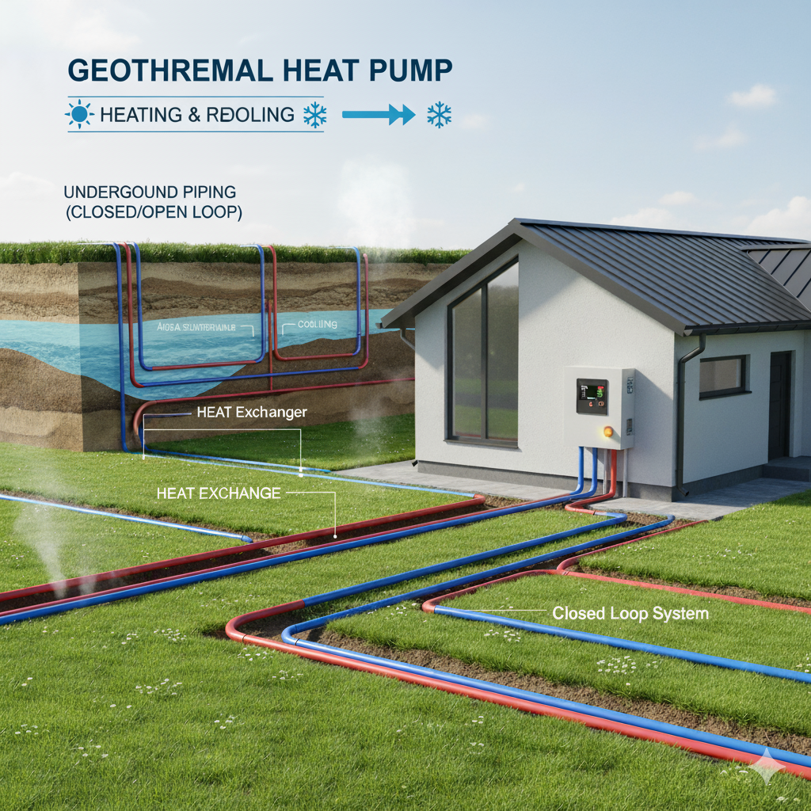

O que é Energia Geotérmica
A energia geotérmica é a energia gerada a partir do calor armazenado no interior da Terra. Esse
calor pode ser aproveitado para produzir eletricidade ou aquecer ambientes.
A fonte dessa energia está no calor proveniente do interior da Terra.A energia geotérmica é
considerada uma fonte renovável e sustentável, pois utiliza recursos naturais que são
praticamente inesgotáveis em uma escala humana.
Como Funciona?
A energia geotérmica pode ser capturada de várias maneiras. Clique nas abas abaixo para aprender sobre os três principais sistemas que usamos para levar o calor da Terra até você.
Sistemas de Coletor de Solo (Horizontal)
O solo, a uma profundidade de 1,5 a 2 metros, armazena calor do sol e da chuva. Um sistema de tubulação horizontal enterrado absorve esse calor e o transfere para uma bomba de calor, que aquece ou resfria sua casa. É ideal para novas construções com espaço de terreno disponível.
Aplicacões da Energia Geotermica
Em residências e edifícios, as bombas de calor geotérmicas (GHP) utilizam a temperatura estável do solo próximo à superfície (que é mais quente que o ar no inverno e mais frio no verão) para fornecer aquecimento, resfriamento e água quente. É uma das aplicações mais comuns.
Climatização

No inverno, o sistema capta o calor relativamente estável do subsolo (mesmo em climas frios) e o transfere para aquecer o interior de residências, edifícios comerciais ou indústrias.
No verão, o processo pode ser invertido, removendo o calor do ambiente interno e rejeitando-o no subsolo, que está em uma temperatura mais baixa.
Aplicações na Agricultura
Aquecimento de Estufas: Mantém a temperatura ideal dentro de estufas, permitindo o cultivo de produtos fora da estação ou em regiões mais frias.
Aquicultura e Piscicultura: Utilizado para manter a água em temperaturas ótimas para a criação de peixes e outros organismos aquáticos.
Lazer, Saúde e Processos Industriais

Balneoterapia e Terapêutica Termal:
Utilização das águas termais para banhos e tratamentos de saúde em spas e centros termais.Aquecimento de Piscinas: Utilização para manter a temperatura de piscinas, tanto em centros de lazer quanto em instalações privadas.
Principais Vantagens
Escolher a energia geotérmica traz benefícios significativos para o planeta e para o seu bolso. Veja os pilares que tornam nossa solução a escolha ideal para um futuro sustentável.
Baixo Impacto Ambiental
Nossos sistemas geotérmicos protegem o meio ambiente. Ao usar o calor natural da Terra, preservamos os ecossistemas e a biodiversidade local.
Uso Sustentável dos Recursos
A água utilizada no processo pode ser reinjetada no aquífero sem qualquer perda de qualidade, garantindo um ciclo fechado e 100% sustentável.
Energia Limpa e Estável
Fornecemos energia o ano todo, 24/7, independente do clima ou da estação. Isso contribui diretamente para a redução do aquecimento global.
Nossas Premiações
Reconhecimento pelo esforço, excelência e dedicação.

Prêmio Global Energy
2023
Reconhecida pela International Geothermal Association como uma das iniciativas mais inovadoras da América Latina, nossa planta geotérmica contribui com energia limpa e estável para mais de 50 mil residências.
Energy Globe Award
2022
Destaque na categoria “Energia Sustentável” pela implementação de sistemas de reinjeção que reduzem o impacto ambiental e aumentam a eficiência térmica de todo sistema de aquecimento, trazendo inovação e melhorias para diversos produtos.
Green Innovation Award
2023
Destacada pelo Renewable Future Institute, nossa planta geotérmica foi reconhecida pelo desenvolvimento de um sistema híbrido que combina calor geotérmico e solar para otimizar a produção energética em regiões remotas.